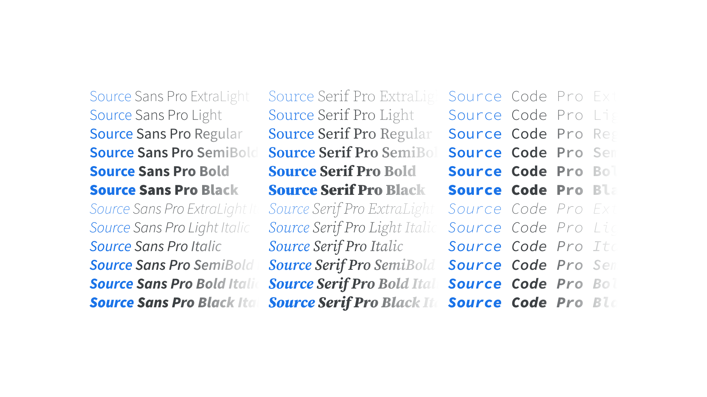

Superfamily
By Google Fonts Knowledge contributors · Google Fonts Knowledge.
Original article · Source on GitHub · CC BY-SA 4.0. Text, illustrations and existing credits reproduced from the licensed Knowledge repository. Open Shelf adapted the layout and links; these adaptations are also CC BY-SA 4.0. No endorsement implied.
A superfamily is the collective grouping of several explicitly related type families—such as a serif, sans, and slab—that all share the same underlying structure to their design.

It’s common for a typeface to be made up of several variants—usually weights—and this is referred to as a “family.” When the variants are more plentiful, especially when the family includes variants across typeface genres (e.g. serif and sans), it can be referred to as a “superfamily.” Variable fonts make it possible to deploy an entire superfamily as a single font file.
Examples of superfamilies include Source (Sans, Serif, Code), IBM Plex (Sans, Sans Condensed, Serif, Mono), and Roboto (Sans (Flex), Sans (Classic), Sans Condensed (Classic), Serif, Slab, Mono).